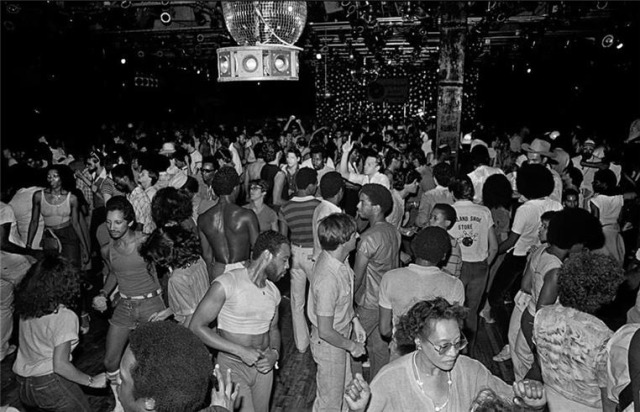

Looking north up 12th Ave, at 125th St, 1976
Looking north up 12th Ave, at 125th St, 1976

Market Street, 1970
Playing on the lower east side, 1973

Central Park quilting, 1973

I’m walkin’ here!
Jaywalking in midtown, 1973

Old school, ugly graffiti, 1972
Best socks ever; looking for the best hat to match
Waiting for a payphone, 1981
I guess Jewish records were a thing in 1960

Making fun of a preacher man outside of the Met, 1972

Kids in Central Park, 1972

Graffiti in Riverside Park, 1980

Subway in Williamsburg, Brooklyn, 1987
Life on Houston Street, 1980
Shitty van on the Manhattan Bridge, 1987
Empire State Building in the haze, 1960s

Hanging out in an abandoned shop, South Bronx, 1977

Herman’s on 42nd Street, 1972
Subway, 1973

Jazz in Harlem, 1970
Times Square, 1970

Broadway and 47th Street, 1980

7th Street, between C & D
South Bronx playground, 1972
Rollerskating to work on the first Earth Day, 1970

Outside CBGB, 1977
Gay Pride Parade, 1973
Wow! Just found your Tumblr. I've lived at 9th St & 2nd Ave since 1974. The pics of the East Village and surrounding nabes was a trip down memory lane, alas most of it sorrowful. The "East Village" is nearly dead. There is a remnant of the 1970s-1980s vibrant culture left but mostly it has become a gentrified amusement park for NYU students and luxury condos. Thanks for the memories. Though it was rough in the bad old days, it had life & I miss it.
Thanks for the thanks! And for sharing some memories. Yeah, NYC is never going to be as interesting as it was. Or as dangerous, so I guess that’s something too.

Houston Street, 1960s

Sweet Cakes, 1976

Rocky’s The Fisherman’s Dock Italian Seafood Restaurant. 45 Prince Street. The Feast of San Gennaro Festival, 1976.
McGregor Haircutters, St. Mark’s Place
Hair Power and Centre on St Marks Place, 1985

Ready to hit the streets, 1974
A Stuyvesant High School homeroom in the late 70s

Dean Street station, Brooklyn
1 Train comin’ at ya

Makin’ it rain. Tokens.
The hair!
Broadway and 55th, 1970
Madison and 42nd, 1979. At the time, Duane Reades were kinda rare.

Predator showing in Times Square, 1987
1970s cop
Stacked trains, East Gun Hill Road in the Bronx, 1973

View from the World Trade Center, 1979
 Bill Bernstein
Paradise Garage Dance Floor, New York City, 1979
Black and White Type: Archival Digital Print

Devil train (6666)
VW bug at 127th and Madison Ave, 1979

Outside Grand Central, 1979

The Burger Joint! 1987. Amazing food.
Miles Davis on the West Side Drive, 1969